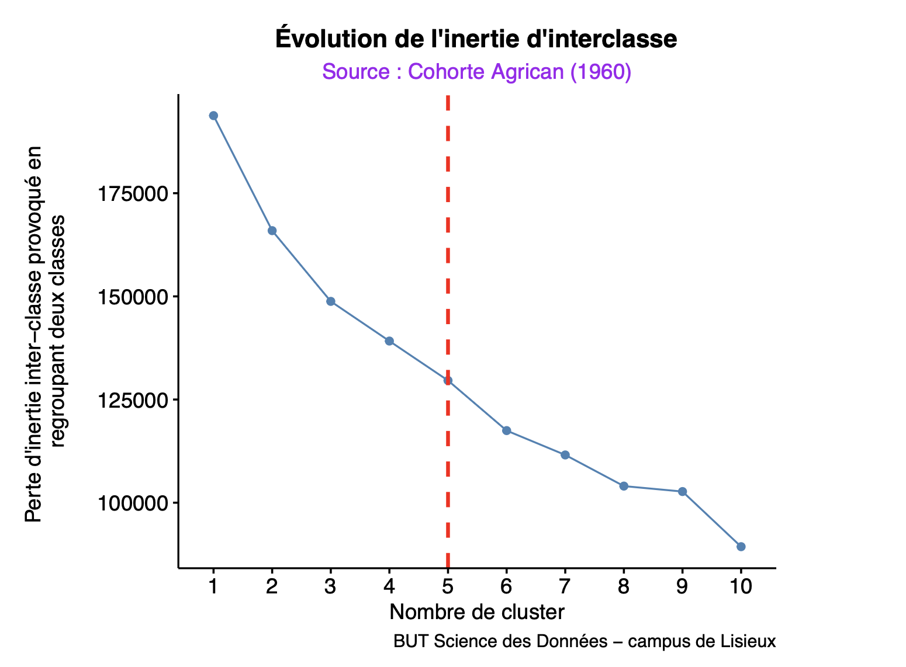

Agriculture et Cancer (Agrican)
Analyse multivariée et segmentation des pratiques professionnelles de la cohorte 1960.
Présentation du projet
Cette étude s'appuie sur la cohorte Agrican, la plus grande étude épidémiologique française sur le milieu agricole. L'objectif est de constituer des profils types d'agriculteurs selon les activités exercées durant leur carrière professionnelle (cultures, élevage, viticulture).
La population d'intérêt comprend 12 310 individus de la sous-cohorte ayant débuté leur carrière entre 1950 et 1970.
Méthodologie Statistique
Le protocole d'analyse a été structuré en trois étapes clés sous R :
- Calcul des ratios de pratique : Détermination de la durée de chaque activité par rapport à la durée totale de carrière.
- ACP (Analyse en Composantes Principales) : Réduction dimensionnelle permettant de conserver 75,88% de l'information initiale via 7 axes factoriels.
- Clustering K-means : Classification automatique pour regrouper les agriculteurs ayant des trajectoires similaires.
Résultats et Profilage
L'analyse a mis en lumière des spécialisations fortes au sein des groupes formés :
- Cluster 2 : Dominé par l'élevage de bovins (94,08%).
- Cluster 6 : Quasi-exclusivement dédié à la viticulture (96,99%).
- Comportements de santé : Des disparités de tabagisme ont été observées, le cluster 5 présentant le taux de fumeurs le plus élevé (58%).
Détermination du nombre de classes
Pour identifier le nombre optimal de clusters, nous avons utilisé la méthode du coude. Le graphique montre une décroissance forte de l'inertie intra-classe, révélant un point d'inflexion notable.

Figure : Courbe d'évolution de l'inertie d'interclasse (Méthode du coude)
Accéder aux ressources
Retrouvez l'intégralité du rapport d'analyse complet.
Rapport